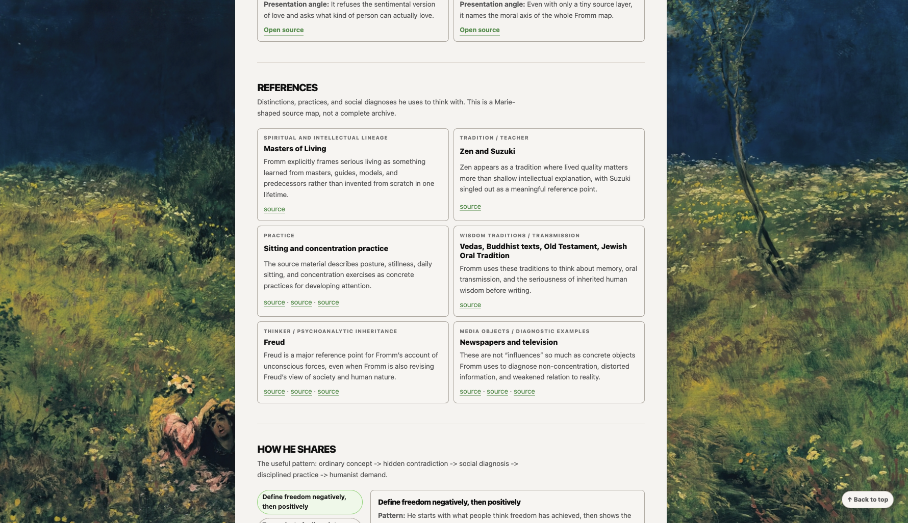
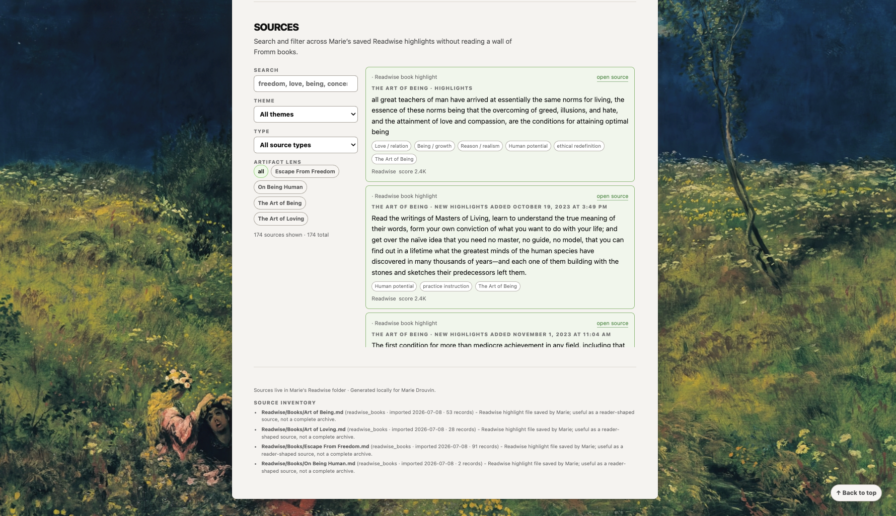

Salut, moi c’est Marie. J’aime fabriquer des choses sur internet et, cette année, j’explore l’IA à fond. Ce portfolio rassemble les expériences qui ont marché : des choses que j’utilise vraiment ou que j’ai lancées.
Je suis disponible pour des postes en product design, certaines missions freelance et des collaborations avec des personnes qui conçoivent des produits IA avec soin.
Une bibliothèque privée pensée pour le téléphone, que j’ai construite pour rassembler des cours interactifs, des rapports de recherche guidés par leurs sources et de petits outils.
PeopleDex
Un workflow de recherche privé que j’ai construit pour comprendre comment les personnes que j’admire pensent, travaillent et racontent ce qu’elles créent, sans perdre les sources derrière l’interprétation.
Pourquoi j’ai créé ce projet
Quand je découvre une personne dont le travail me touche vraiment, j’ai tendance à plonger très loin dans ses archives. Je lis ce qu’elle vient de publier, ce qu’elle faisait il y a longtemps et tout ce qu’il y a entre les deux. Je vois un peu ces personnes comme des mentors à distance : leurs idées m’affectent, mais je veux aussi que leur manière de penser transforme ma manière de travailler.
Je voulais comprendre davantage que ce qu’elles disent. Je voulais voir les idées qui reviennent, ce qu’elles construisent, comment elles recueillent et développent leurs idées, quelles références les nourrissent et comment elles choisissent de présenter quelque chose.
PeopleDex est né quand j’ai compris que l’IA pouvait m’aider à faire ça de manière systématique. Je donne au skill des sources substantielles sur une personne qui compte déjà pour moi, et il transforme tout ça en un profil sourcé que je peux explorer dans ma bibliothèque privée.
Une présentation de trois minutes en anglais du profil d’Alex Dobrenko et des six sections de PeopleDex.
Ce que PeopleDex extrait
Chaque profil est organisé autour de six questions :
Quelles idées et quels principes reviennent sans cesse ?
Qu’est-ce que cette personne a créé ?
Comment trouve-t-elle, conserve-t-elle, développe-t-elle et publie-t-elle ses idées ?
Quelles personnes, traditions, outils et références culturelles l’influencent ?
Comment présente-t-elle et partage-t-elle son travail ?
Quelles sources précises permettent de vérifier chaque interprétation ?
La partie consacrée aux références est l’une de mes préférées, parce qu’elle m’entraîne dans des terriers de lapin très utiles. Visakan Veerasamy cite des films de super-héros. Alex Dobrenko fait référence à Windows 95 et à des environnements de code. Les références de JA Westenberg relèvent plutôt du minimalisme tech : une webcam, une pièce, pas de B-roll.

Les références à l’intérieur d’un profil consacré à Erich Fromm.
Comment ça fonctionne
Highlights Readwise
Conférences complètes + contenus substantiels
Le skill extrait et organise les motifs récurrents
Un profil sourcé rejoint Marie’s Library
Les highlights Readwise sont généralement le point de départ, parce que j’ai déjà beaucoup surligné ces personnes avant de décider de leur consacrer un profil. J’ajoute quelques contenus complets qui ont eu un vrai impact sur moi. Une conférence entière est idéale : elle donne au skill assez de contexte pour comprendre ce qui occupe cette personne aujourd’hui, au lieu de prendre quelques extraits isolés pour l’ensemble de sa pensée.
Chaque interprétation renvoie aux Sources. Les contenus sont organisés par idée et par type de source, ce qui me permet de vérifier ce que l’IA a repéré plutôt que de le prendre pour un fait.

Le navigateur de sources permet de vérifier chaque interprétation.
Comment je m’en sers
Ce qu’il y a de plus transformateur dans PeopleDex, ce n’est pas l’archive elle-même. C’est le fait que j’ai réellement intégré certains réflexes de mes mentors à distance dans mon propre workflow.
Zara Zhang ouvre ses vidéos en commençant par le problème. J’ai étudié cette manière de faire chez elle, et je suis maintenant beaucoup plus à l’aise pour créer de courtes vidéos sur les petits produits que je construis. Je sais trouver l’angle avant de commencer à expliquer l’objet.
Un autre principe de Zara est devenu essentiel dans ma manière de travailler : construire d’abord, apprendre ensuite. Je construis quelque chose avec l’IA, puis je lui demande comment ce qui existe a été construit. J’ai beaucoup plus appris sur le fonctionnement d’internet dans cet ordre-là qu’en essayant de tout apprendre avant de fabriquer quoi que ce soit.
Alex Dobrenko transforme la présentation en objet présenté. Je n’ai pas encore eu la bonne occasion pour essayer cette approche, mais j’ai très envie de créer un environnement qui soit lui-même la présentation : la pièce dans laquelle le public entre. Cette idée a complètement changé ce que j’ai envie de faire d’une présentation.
Ce qui vient ensuite
PeopleDex n’a pas eu besoin d’une grande refonte depuis que je l’ai créé. À ce stade, j’ajoute des personnes plutôt que des fonctionnalités.
Il contient aujourd’hui six profils, commencés en juillet. C’est volontairement une archive lente et conçue pour durer, parce que je n’ajoute quelqu’un que lorsque son travail compte vraiment pour moi. Je ne rencontre pas une nouvelle personne comme ça chaque semaine, et c’est précisément l’idée.
Workflows personnels avec l’IA
Un petit ensemble de workflows assistés par IA que j’ai construit pour faire avancer le travail de la capture et la planification jusqu’à la création, la publication et la revue.
Ready to Publish: Vérifie un brouillon terminé de Les Papiers, suggère des liens internes et prépare les fichiers et URL nécessaires à sa mise en ligne.
YouTube Description: Produit des descriptions YouTube en français cohérentes, avec une ouverture claire et les liens pertinents.
MD Slides: Transforme du matériel pédagogique en slides HTML responsives dans le langage visuel de mariedrouvin.com.
YouTube Thumbnail: Applique mon système visuel aux images vidéo tout en gardant le centre libre pour le bouton de lecture de YouTube.
Monologue to Daily Note: Transforme les nouvelles notes Monologue en transcriptions complètes, puis ajoute un résumé structuré et un lien exact dans la daily note correspondante.
Project Creation: Crée un dossier de projet durable, ses propriétés d’action, son contexte et son journal à partir d’un seul brief.
Publication des actualités du site: Transforme une actualité Markdown en données validées, puis met à jour l’accueil et l’archive des actualités sur mariedrouvin.com.
Publication sur Notes: Prépare et vérifie un brouillon Obsidian, construit l’article public et le déploie sur notes.mariedrouvin.com.
End of Day: Combine les rappels terminés et les traces de la daily note pour enregistrer ce qui s’est réellement passé.
Month Review: Synthétise les notes, transcriptions, calendriers, ventes, publications et l’historique de lecture dans une revue mensuelle.
Ready to Publish
Un workflow de publication privé qui vérifie un brouillon terminé de Les Papiers, suggère des liens internes et prépare les fichiers et URL nécessaires à sa mise en ligne.
YouTube Description
Un workflow d’écriture privé pour produire des descriptions YouTube en français cohérentes, avec une ouverture claire et les liens pertinents.
MD Slides
Un workflow de présentation privé que j’utilise pour transformer du matériel pédagogique en slides HTML responsives dans le langage visuel de mariedrouvin.com.
YouTube Thumbnail
Un workflow privé de production d’images qui applique mon système visuel tout en gardant le centre libre pour le bouton de lecture de YouTube.
Monologue to Daily Note
Une automatisation locale que j’ai construite pour transformer les nouvelles notes Monologue en fichiers de transcription complets, puis ajouter un résumé structuré et un lien exact dans la daily note correspondante.
Project Creation
Un workflow privé du vault qui crée un dossier de projet durable, ses propriétés d’action, son contexte et son journal à partir d’un seul brief.
Publication des actualités du site
Un workflow de publication privé qui transforme une actualité Markdown en données validées, puis met à jour l’accueil et l’archive des actualités sur mariedrouvin.com.
Publication sur Notes
Un workflow de publication privé qui prépare et vérifie un brouillon Obsidian, construit l’article public et le déploie sur notes.mariedrouvin.com.
End of Day
Une automatisation locale de fin de journée qui combine les rappels terminés et les traces de la daily note pour écrire un relevé concis de ce qui s’est réellement passé.
Month Review
Un workflow privé de revue mensuelle qui synthétise les notes, transcriptions, calendriers, ventes, publications et l’historique de lecture.
Tweet Inbox
Une application web privée et offline-first que j’ai construite pour capturer de possibles publications sans avoir à ouvrir un fil de réseau social.
Portfolio
Le site bilingue que j’ai conçu et construit pour rendre mes sites, outils, skills, automatisations, publications et expériences internet faciles à explorer.